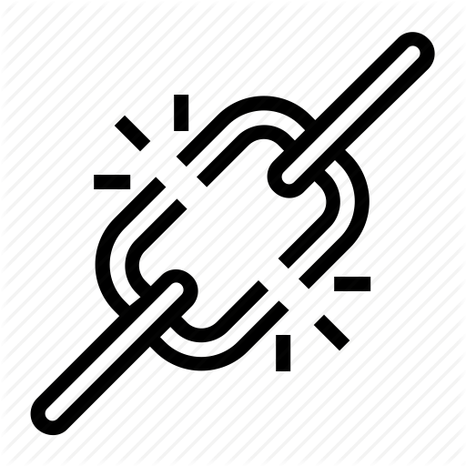

<ion-header>

  <ion-navbar color="primary">
    <ion-title>View Media</ion-title>
    <ion-buttons end>
      <button ion-button icon-only (click)="selectMediaOptions()">
        <ion-icon name="settings"></ion-icon>
      </button>
    </ion-buttons>
  </ion-navbar>

</ion-header>


<ion-content padding>

  <ion-item text-wrap>
    <div class="view-chunk">
      <h1>{{mediaItem.title}}</h1>
    </div>
    <div *ngIf="mediaItem.type == 'image'">
      
    </div>
    <div *ngIf="mediaItem.type == 'video'">
      
      <video class="videosize" controls>
        <source src="{{ mediaItem.url }}">
        Your browser does not support the video element.
      </video>
    </div>
    <div *ngIf="mediaItem.type == 'audio'">
      
      <audio controls>
        <source src="{{ mediaItem.url }}">
        Your browser does not support the audio element.
      </audio>
    </div>

    <h3 class="view-chunk">{{mediaItem.descript}}</h3>
    <button ion-button block *ngIf="hideURL == false" (click)="toggleURL()">Hide URLL</button>
    <button ion-button block *ngIf="hideURL == true" (click)="toggleURL()">Show URL</button>
    <p class="text" *ngIf="hideURL == false">{{mediaItem.url}}</p>

  </ion-item>

</ion-content>
